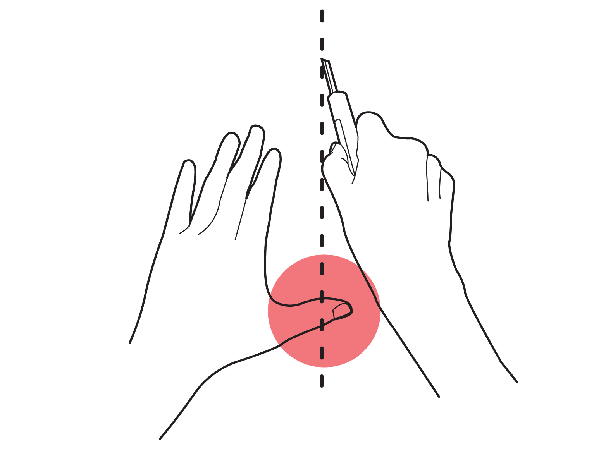

Cut & Retract
Collaborators
None
Time-frame
4 weeks | Jun-Jul 2020
Awards
Project overview
Cutting with sharp tools can be especially dangerous for visually impaired people.
Cut & Retract is a safe auto-retractable cutting tool designed for those people, which prevents them being hurt in the three phases of the cutting process: before, during and after cutting.
This product ensures the safety of visually impaired people even with some tiniest daily tasks such as cutting package boxes or paper. On top of that, it shows how design can bring equality to the lives of people with special needs.
01 Define the problems
1.1 Understanding the scenario
To understand the users as well as the problem space better, I decided to experiment cutting with my eyes covered and created a storyboard showing how a visual impaired person approach cutting task step by step.
1.2 The problems
There are four major safety problems regarding cutting objects with the existing cutting tools.
Before cutting
1. Can’t identify where to cut. Touching is the only to align the blade to the cutting area, which may hurt the hand.
2. Can’t tell how long the blade is. Touching is the only way to tell the length of the blade, which is dangerous.
During cutting
3. Accidently cut the other hand during cutting due to unseen cutting path.
After cutting
4. After cutting, the exposed blade will cut towards user due to overshooting and cutting inertia.

2.2 Interaction & Usage
*Cutting box is used as an example here to illustrate the using process.
Toggle the switch, making it in the unlocked mode so that the wheel is able to be pressed.
Touch the indent line in the front to align it to the cutting area.
Press with the palm to let the blade come out and slide to cut. It supports both flat-surface cutting and edge-cutting.
The other hand won’t get hurt even it touches the product.
The blade will retract back when the wheel leaves the surface first.
Finish cutting.
2.3 Compare & Contrast
1. The indent in the front allows safe touching and alignment.
2. The length of the blade can be adjusted through the depth of pressing without touching.
3. The wheel in the back prevents the other hand from being touched by the blade.
4. The auto-retractable blade will prevent the user from accidentally hurt themselves right after finishing cutting.
2.4 Mechanics
2.5 Form details & Ergonomics